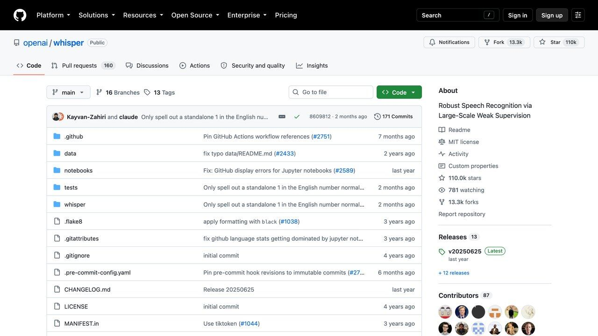

H ay un punto en el que la mayoría de la gente descubre que esto funciona demasiado bien. Subes dos minutos de tu propia voz, escribes un párrafo cualquiera y al cabo de un rato lo oyes dicho por ti, con tus pausas y tu acento, diciendo algo que no has dicho nunca. La reacción normal no es entusiasmo: es un pequeño escalofrío. Y ese escalofrío es, probablemente, la parte más útil de la experiencia.
Porque en audio la conversación ya no va de si la tecnología llega o no llega. Llega. Transcribir una reunión de una hora cuesta céntimos y tarda menos de lo que tardas en prepararte un café. Generar una voz sintética que no suena a robot es cuestión de pegar un texto en una caja. Lo que no está resuelto es todo lo demás: qué puedes hacer con la voz de otra persona, cuánto te puedes fiar de una transcripción que parece impecable, y qué obligaciones nuevas tienes encima si publicas algo generado.
Esta guía va de las tres cosas a la vez, porque en la práctica se usan juntas y se confunden constantemente. Y va con una advertencia de partida: es el área donde más rápido se ha movido la ley en los últimos dos años, así que las reglas que aquí se citan tienen fecha y conviene comprobarlas antes de montar nada serio encima.
Tres cosas distintas que se llaman igual
«Audio con IA» se usa para tres operaciones que no se parecen en nada: ni en dificultad, ni en riesgo, ni en lo que te puede pasar si te equivocas. Separarlas antes de nada ahorra casi todos los malentendidos.
Transcribir (audio → texto). Convertir una grabación en texto. Es la operación más madura y la más útil en el día a día, y aun así es donde hay un fallo silencioso que casi nadie vigila. La veremos primero.
Sintetizar voz (texto → audio). Leer un texto en voz alta con una voz genérica del catálogo de la herramienta. No es la voz de nadie real, así que no hay derechos de terceros de por medio. Es la opción aburrida y, casi siempre, la correcta.
Clonar una voz concreta. Construir un modelo de una persona a partir de muestras suyas y hacerle decir lo que quieras. Técnicamente es un paso pequeño desde lo anterior. Legalmente es otro mundo, y es donde está todo el riesgo de esta guía.
La distinción práctica es simple: las dos primeras no tocan los derechos de nadie; la tercera sí, siempre, aunque la voz sea la tuya y aunque el resultado no salga de tu ordenador. Si puedes resolver tu problema con una voz de catálogo, resuélvelo con una voz de catálogo. La mayoría de los proyectos que acaban en un lío legal empezaron clonando cuando no hacía falta.
Queda una cuarta que merece mención aparte porque tiene su propio embrollo de derechos: generar música. La tocamos al final, porque el problema ahí no es la voz de una persona sino el catálogo con el que se entrenó el modelo.
Transcribir: excelente de media, y ese es el problema
Los sistemas de reconocimiento de voz actuales aciertan la gran mayoría de las palabras con audio limpio y buena dicción, y en español rinden bien con los modelos grandes. No damos un porcentaje de error porque varía mucho según el modelo, el idioma, el acento y la calidad del audio, y las clasificaciones públicas cambian cada pocos meses: si el dato te importa, mide con tus propias grabaciones. Lo que sí sabemos es la forma del error: la mayoría son pequeños y obvios.
Ese número, sin embargo, describe lo normal, y lo normal no es lo que te va a meter en un problema. El fallo que importa es otro y tiene nombre propio.
Los modelos de transcripción alucinan: en vez de dejar un hueco cuando no entienden algo, escriben una frase plausible que nadie dijo. Una investigación de Associated Press (publicada en 2024) sobre Whisper, el modelo de OpenAI, recogió el trabajo de varios equipos independientes: un investigador de la Universidad de Michigan encontró texto inventado en ocho de cada diez transcripciones que revisó; un ingeniero de aprendizaje automático lo encontró en cerca de la mitad de más de cien horas analizadas; y un estudio detectó 187 alucinaciones en más de 13.000 fragmentos de audio nítido.
Lo grave no es la cantidad, es la forma. El texto inventado no parece un error: está bien escrito, encaja en el contexto y a veces añade cosas que no estaban — desde tratamientos médicos inexistentes hasta frases violentas. Un error de transcripción normal se ve. Una alucinación se lee como si fuera parte de la conversación.
El patrón se repite en los silencios, la música de fondo, la respiración y los tramos donde no hay habla clara: el modelo está entrenado para producir texto, no para producir nada, así que rellena. Es el mismo mecanismo que explicamos en la guía de alucinaciones de la IA, aplicado al audio — y aquí es más peligroso, porque nadie sospecha de una transcripción del mismo modo que sospecha de una respuesta de un chatbot.
De ahí salen tres costumbres que valen para cualquier uso serio. La primera: recorta los silencios largos antes de transcribir, que es donde se concentra el relleno. La segunda: si la transcripción va a sostener una decisión —un acta, una entrevista publicada, un historial— escucha los tramos que vas a citar, no la grabación entera; basta con verificar lo que de verdad vas a usar. La tercera, la menos intuitiva: desconfía especialmente de las frases que suenan bien en un audio que era malo. Si el original estaba en una cafetería con ruido y la transcripción sale redonda, ahí hay algo que revisar.
Un apunte sobre qué usar. Whisper sigue siendo la opción más versátil y la única que puedes ejecutar en tu propio ordenador sin complicaciones —relevante si el audio es confidencial, y si vas por ahí, la guía de IA local en tu ordenador cubre el montaje—. Los servicios de pago suelen ganarle en dos cosas concretas que Whisper hace mal: separar quién habla en cada momento y transcribir según llega el audio en vez de por lotes. Si tu problema es alguno de esos dos, paga; si no, no hace falta.
Clonar una voz: cómo se hace y qué lo frena
Aquí conviene ser honesto con una cosa incómoda: clonar una voz reconocible ya no requiere mucho material. Unos pocos segundos de audio limpio bastan para un parecido que engaña por teléfono, y unos minutos dan algo que engaña con calma. Cualquier persona con un vídeo público, un podcast o una nota de voz reenviada tiene material suficiente circulando.
Las herramientas comerciales distinguen dos niveles, y la diferencia entre ellos no es solo de calidad: es la barrera que separa el uso legítimo del abuso.
Instantáneo. Subes una muestra corta y tienes la voz en minutos. Disponible en los planes baratos de casi todas las herramientas. La calidad es buena pero no perfecta, y la única barrera es que aceptes una declaración de que tienes permiso — una casilla, nada más.
Profesional. Requiere bastante más material y un entrenamiento que tarda horas. El resultado es notablemente mejor, y a cambio las plataformas serias lo restringen a tu propia voz con una verificación en directo: la aplicación te muestra un texto en pantalla y tienes que leerlo en voz alta dentro de un tiempo límite, y compara esa grabación con las muestras que subiste.
Esa verificación en directo es la pieza más interesante de todo el sector, y merece entenderse por lo que es: no es un trámite, es el consentimiento incrustado en el producto. Con audio robado no puedes pasarla, porque tendrías que producir la voz de esa persona en directo y bajo demanda. Es, de lejos, el mejor control que existe hoy — y también explica por qué el abuso se concentra en el nivel instantáneo, donde la única barrera es una casilla que nadie comprueba.
Dos consecuencias prácticas. Si vas a clonar tu voz para trabajar —narrar tus propios vídeos, mantener un tono constante en un podcast, doblarte a otro idioma— usa el nivel profesional aunque cueste más: la verificación deja constancia de que la voz es tuya, y esa constancia vale mucho si algún día alguien discute el uso. Y si estás pensando en clonar la voz de otra persona, el resto de esta guía va sobre por qué casi nunca es buena idea.

Qué dice la ley en España y en la UE
Mucha gente da por hecho que la voz es terreno de nadie porque no se parece a una foto ni a un texto con copyright. En España no es así, y no hace falta ninguna ley nueva de IA para que no lo sea: la protección lleva décadas en vigor.
El punto de partida es el artículo 18.1 de la Constitución, que garantiza el derecho al honor, a la intimidad y a la propia imagen; la voz, como rasgo de la personalidad, entra ahí. Eso se desarrolla en la Ley Orgánica 1/1982, cuyo artículo 7.6 es el que conviene tener presente: usar el nombre, la voz o la imagen de una persona con fines publicitarios, comerciales o análogos es una intromisión ilegítima. No dice «imitar», dice usar. Y no exige que engañes a nadie ni que la persona pierda dinero: basta el uso sin consentimiento.
A eso se le suma la protección de datos. La voz identifica a una persona, así que es un dato personal a efectos del RGPD, y cuando se trata específicamente para identificar o autenticar a alguien pasa a ser un dato biométrico, de categoría especial y con un régimen bastante más estricto. Clonar una voz ajena sin consentimiento es, por esa vía, también una infracción de protección de datos, independientemente de lo que luego hagas con el clon. Si estás montando algo que procesa voces de terceros, la guía de cómo proteger tus datos al conectar la IA cubre las preguntas de base.
El artículo 50 del Reglamento Europeo de IA es aplicable desde el 2 de agosto de 2026. Obliga a quien difunde un deepfake —definido ahí como contenido de imagen, audio o vídeo generado o manipulado con IA que se parece a personas, objetos o hechos reales y podría parecer auténtico— a revelar que es artificial. Los proveedores de los generadores, por su parte, tienen que marcar las salidas en un formato legible por máquinas. Cómo señalizarlo cuando no hay imagen, como en un audio, lo desarrolla un código de buenas prácticas voluntario que la Comisión Europea presenta en su página oficial; en un audio, una etiqueta visual no sirve y conviene decirlo de viva voz. Las sanciones por incumplir el artículo llegan a 15 millones de euros o el 3% de la facturación mundial.
En España hay además una ley propia en camino: el Consejo de Ministros aprobó el 26 de mayo de 2026 el proyecto de ley orgánica para el buen uso y la gobernanza de la IA, que obliga a etiquetar de forma clara cualquier contenido —imagen, vídeo, texto o audio— generado o manipulado con IA, y fija su propio régimen sancionador. Importante: era un proyecto remitido a las Cortes y no hemos comprobado en esta revisión si el Congreso ha avanzado, así que el texto final puede cambiar. No lo des por vigente sin mirar su estado en congreso.es.
La lectura conjunta es más sencilla de lo que parece. La ley vieja te dice de quién necesitas permiso; la nueva te dice que, además, tienes que avisar de que es sintético. Son obligaciones independientes: el consentimiento de la persona no te exime de etiquetar, y etiquetar no te legitima para usar una voz que no te han cedido. Si el Reglamento de IA te pilla de nuevas, lo desmenuzamos entero en la guía del AI Act.
Una nota sobre los permisos, porque es donde más gente se confía: un consentimiento sirve para lo que dice que sirve. Que alguien te dejara grabarle no significa que te haya cedido su voz para entrenar un modelo, y que te cediera la voz para un proyecto no la cede para el siguiente. Si vas a clonar la voz de una persona real, que el permiso sea por escrito y que diga qué se va a hacer, durante cuánto tiempo y cómo se revoca. Es el tipo de papel que parece excesivo hasta el día que hace falta.
El fraude por voz, que ya no es hipotético
La razón por la que todo esto importa más que un debate académico es que el abuso ya tiene volumen. El INCIBE viene registrando casos de fraude con voz clonada en España, y el esquema es casi siempre el mismo: un mensaje que parece del banco, y acto seguido una llamada con una voz conocida —un familiar, el director financiero— pidiendo algo urgente.
Funciona porque ataca el punto donde la verificación humana es más débil. Reconocer una voz es automático e inconsciente: no la analizas, la reconoces y sigues. Y sobre ese reconocimiento se monta la urgencia, que es lo que impide parar a comprobar. El caso más citado en el mundo corporativo es el de la ingeniería Arup, donde un empleado de su oficina de Hong Kong autorizó transferencias por el equivalente a unos 25 millones de dólares tras una videollamada en la que todos los demás participantes eran sintéticos.
Una palabra acordada de antemano. Con tu familia y con quien pueda pedirte dinero. No se comparte por escrito en ningún sitio y no se pregunta por el mismo canal desde el que llaman. Es de baja tecnología y es lo que mejor aguanta.
Devolver la llamada al número de siempre. No al que aparece en la pantalla, no al que te dicten. Un clon de voz no controla quién descuelga cuando llamas tú.
Que la urgencia sea la señal de alarma. El apremio no es un detalle del cuento, es la herramienta principal: existe para que no verifiques. Cualquier petición urgente e irreversible merece treinta segundos de comprobación por otro canal, y una petición legítima sobrevive a esos treinta segundos sin problema.
Conviene descartar una defensa que suena razonable y no lo es: los detectores de voz sintética. Existen, mejoran, y aun así no sirven como red de seguridad para una persona normal — no los vas a tener corriendo en mitad de una llamada, y van siempre un paso por detrás de los generadores. La defensa buena es de procedimiento, no de tecnología; el porqué, y lo que sí funciona para rastrear un archivo, en cómo saber si un audio lo ha hecho una IA. Y, en el otro sentido, si lo que te preocupa es tu propia voz circulando: no puedes retirar lo que ya es público, así que el esfuerzo rinde más en acordar la palabra clave que en intentar borrar tu rastro sonoro de internet.
Música generada, y en qué queda todo esto
La música generada tiene un problema distinto al de la voz: no es de quién suena, es con qué se entrenó. Las discográficas demandaron a las dos plataformas principales, Suno y Udio, y el asunto se ha ido resolviendo a trozos. Según la prensa especializada: Universal llegó a un acuerdo con Udio en octubre de 2025, y Warner lo alcanzó con Suno y con Udio en noviembre de 2025; Universal y Sony seguían litigando contra Suno en agosto de 2026, y Sony contra Udio. En paralelo, músicos independientes han presentado demandas propias con un argumento que se sostiene bastante bien: los acuerdos de los grandes sellos cubren los catálogos de los grandes sellos, y quien distribuye por su cuenta no estaba sentado en esa mesa. Son pleitos vivos y cambian cada mes, así que trata este párrafo como una foto fechada, no como un estado definitivo.
Para quien solo quiere una pista de fondo, la conclusión práctica es aburrida pero clara: el terreno se está ordenando y todavía no está ordenado. Si la música va en algo comercial, lee qué derechos te cede exactamente la plataforma que uses —cambian con cada acuerdo que se firma— y guarda esa versión de las condiciones. Si el proyecto no aguanta que dentro de un año haya que cambiar la pista, usa música con licencia de las de toda la vida.
Y con eso se cierra el círculo de las cuatro operaciones. Si hay que quedarse con algo, que sea esto: transcribir es seguro pero hay que verificar lo que vas a citar; sintetizar con voz de catálogo es seguro y casi siempre suficiente; clonar exige permiso explícito y, desde agosto de 2026, avisar de que es sintético; y generar música exige leer la letra pequeña de la plataforma. Las cuatro son operaciones distintas y solo dos de ellas te pueden meter en un problema.
Si vienes buscando montar algo más grande alrededor de esto —procesar audio automáticamente, meterlo en un flujo con otras herramientas— el paso siguiente natural es analizar imágenes y PDFs con IA, que cubre el resto de entradas que no son texto, y las herramientas de vídeo con IA, donde el audio sintético casi siempre acaba siendo la mitad del trabajo.
Handy: dicta en cualquier app, gratis y sin internet
Handy es una aplicación de escritorio gratuita y de código abierto (MIT) que convierte tu voz en texto en tu propio ordenador. Pulsas un atajo, hablas y el texto aparece en el campo donde estés escribiendo, sin enviar el audio a la nube.
Cómo empezar
- Descárgala desde handy.computer o la página de versiones de GitHub. Hay versión para Windows, macOS y Linux.
- Elige un modelo: Whisper (Small, Medium, Turbo o Large, con aceleración por GPU si la tienes) o Parakeet V3, optimizado para procesador y con detección automática de idioma.
- Configura el atajo de teclado. Puedes mantenerlo pulsado mientras hablas o pulsarlo una vez para empezar y otra para parar.
- Habla y suelta: el texto se pega en la aplicación que tengas abierta.
Es muy útil para escribir prompts largos a una IA: hablando das más contexto en menos tiempo.
Lo honesto: no hay versión para móvil. La primera vez descarga el modelo, que ocupa espacio, y en ordenadores modestos conviene usar los modelos pequeños.
Código: github.com/cjpais/Handy
VoiceStudio: clona tu voz en tu ordenador
VoiceStudio es una alternativa de código abierto (AGPL-3.0) a ElevenLabs que funciona en tu propio ordenador: clonación y diseño de voces, doblaje de vídeos, dictado, transcripción, historias y audiolibros.
Instalación
- Descarga el instalador desde la página de versiones de GitHub:
.dmgpara Mac,.exepara Windows y.AppImageo.debpara Linux. - También hay instalador de un comando: en Mac y Linux,
curl -fsSL https://voicestudio.sh/install | sh; en Windows, desde PowerShell, el comando que indica el README. - Abre la app, graba o sube una muestra de tu voz y escribe el texto que quieras generar.
Con tarjeta gráfica NVIDIA (Windows o Linux) o un Mac con Apple Silicon va acelerado. Sin gráfica dedicada también funciona, más lento, y necesita unos 5 GB libres.
Lo honesto: la licencia AGPL-3.0 cubre la aplicación, pero los modelos de voz, sus pesos y las voces tienen condiciones propias (el proyecto lo avisa en su README), así que lee la licencia del modelo si vas a usarlo comercialmente. Los servicios remotos son opcionales y la analítica de uso solo se activa con tu consentimiento. Clonar la voz de otra persona sin su permiso puede ser ilegal y es una de las bases de muchas estafas: úsalo con tu voz o con autorización.
Código: github.com/debpalash/VoiceStudio
Convierte tus libros electrónicos en audiolibros
ebook2audiobook es una herramienta gratuita y de código abierto (Apache-2.0) que transforma libros electrónicos en audiolibros con capítulos y metadatos, usando motores de síntesis de voz que funcionan en tu ordenador.
Qué puede hacer
- Leer muchos formatos: epub, mobi, azw3, fb2, PDF, txt, rtf, doc, docx, html, odt e incluso imágenes, con OCR para páginas escaneadas.
- Generar el audio en mp3, m4b, m4a, flac, wav y otros formatos.
- Trabajar en 1158 idiomas, entre ellos el español.
- Usar distintos motores de voz (XTTSv2, Bark, VITS, Tortoise…) y, si quieres, clonar tu propia voz a partir de un archivo.
Cómo empezar
- Sigue las instrucciones del README para ejecutarlo en local, con Docker o en remoto.
- Abre la interfaz web (Gradio) que se lanza en tu navegador.
- Sube el libro, elige idioma y voz, y pulsa convertir.
El proyecto indica un mínimo de 2 GB de RAM; con tarjeta gráfica va mucho más rápido.
Lo honesto: el propio autor advierte que es solo para libros sin DRM adquiridos legalmente. No clones voces de otras personas sin permiso. Libros largos pueden tardar horas en ordenadores modestos.
Repositorio: github.com/DrewThomasson/ebook2audiobook
Meetily: transcribe y resume reuniones sin subir el audio
Meetily es un asistente de reuniones de código abierto (MIT) y gratuito que captura, transcribe y resume tus reuniones en tu propio ordenador, sin enviar el audio a servidores externos.
Cómo usarlo
- Descarga el instalador desde la página de versiones del repositorio (macOS y Windows; en Linux, el README explica cómo compilarlo).
- Abre la app y elige el modelo de transcripción.
- Empieza a grabar al inicio de la reunión, ya sea en Zoom, Meet, Teams o presencial: verás la transcripción en tiempo real.
- Al terminar, genera el resumen. Puedes usar un modelo local con Ollama o un proveedor como Claude, Groq u OpenRouter con tu propia clave.
Ventajas
- Privacidad: la transcripción se procesa en tu equipo.
- Coste: usa modelos abiertos en lugar de APIs caras, y funciona sin conexión.
Lo honesto: existe una versión PRO de pago con más precisión y exportaciones avanzadas. En Windows necesita un procesador x64 con AVX2. Si usas un proveedor en la nube para el resumen, el texto sí sale de tu ordenador. Y, sobre todo, informa a los participantes de que grabas: en muchos países es obligatorio.
Repositorio: github.com/Zackriya-Solutions/meetily
Buzz: transcribe y subtitula sin internet
Buzz es una aplicación gratuita y de código abierto (MIT) que transcribe y traduce audio en tu propio ordenador usando Whisper, sin enviar nada a internet.
Qué hace
- Transcribe archivos de audio y vídeo, y enlaces de YouTube.
- Transcripción en tiempo real desde el micrófono, con ventana de presentación para eventos.
- Separación de voces e identificación de hablantes.
- Exporta a TXT, SRT y VTT, y tiene un visor para buscar y reproducir.
- Aceleración con tarjetas NVIDIA, Apple Silicon y Vulkan.
Cómo crear subtítulos
- Descárgalo desde la página indicada en el repositorio: macOS (.dmg), Windows o Linux (Flatpak, Snap o AppImage).
- Abre tu vídeo, elige el idioma y el tamaño del modelo.
- Cuando termine, revisa el texto y exporta en SRT.
- Importa el SRT en tu editor de vídeo o súbelo a YouTube.
Lo honesto: en Mac requiere Apple Silicon (la última versión para Intel es la 1.4.5). En Windows el instalador no está firmado y aparecerá un aviso. Revisa nombres propios y términos técnicos: la transcripción automática falla en ellos.
Enlace oficial: github.com/chidiwilliams/buzz
Qué herramienta local elegir (comparativa rápida)
Las cinco herramientas de arriba son de código abierto y funcionan en tu ordenador, pero resuelven problemas distintos. Datos de licencia y popularidad tomados de la API de GitHub el 17 de octubre de 2026:
| Herramienta | Para qué sirve | Licencia | Estrellas en GitHub | Ojo con |
|---|---|---|---|---|
| Handy | Dictar en cualquier app con un atajo de teclado | MIT | Más de 33.000 | Sin versión para móvil; descarga el modelo la primera vez |
| Buzz | Transcribir y subtitular archivos y vídeos (TXT, SRT, VTT) | MIT | Más de 22.000 | En Mac exige chip de Apple; el instalador de Windows no está firmado |
| Meetily | Transcribir y resumir reuniones | MIT (hay versión PRO de pago) | Más de 31.000 | Avisa a los participantes de que grabas; el resumen en la nube sí envía texto fuera |
| VoiceStudio | Clonar voz, doblar vídeos, dictado y audiolibros | AGPL-3.0 (la app) | Más de 70.000 | Los modelos de voz tienen licencias propias |
| ebook2audiobook | Convertir libros electrónicos en audiolibros | Apache-2.0 | Más de 20.000 | Solo libros sin DRM adquiridos legalmente |
Elegir según el caso: si lo único que quieres es el texto de una grabación, Buzz o Handy; si es una reunión, Meetily; si vas a doblar tus vídeos a otro idioma, VoiceStudio con tu propia voz. Para decidir qué audio puedes subir a servicios en la nube y cuál no, lee cómo proteger tus datos al usar IA, y para montar el traslado de idioma de un vídeo, traducir con IA y las herramientas de vídeo con IA. Si te preocupan las llamadas falsas con voz clonada, tienes más en estafas con IA y detectar contenido hecho con IA.